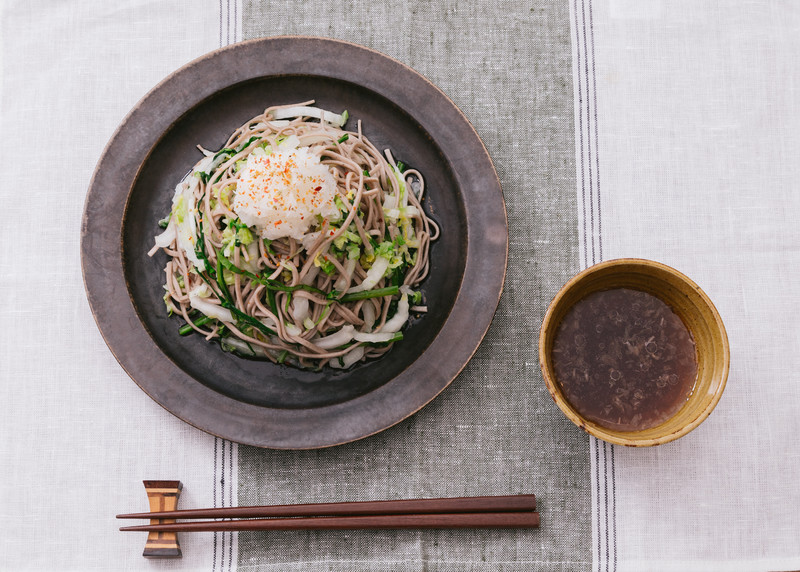

大盛りダイエットおろしそば

材料 1枚分
- そば
- 70g
- 白菜
- 250g
- ほうれん草
- 50g
- 大根
- 50g
- ⚫ 水
- 150ml
- ⚫ めんつゆ(3倍濃縮)
- 大さじ2
- ⚫ 醤油
- 小さじ1
- ⚫ かつお節
- 1g
- ⚫ ごま油
- 小さじ1
- 七味唐辛子
- 適量
作り方
1
白菜は3mm幅の千切りに、ほうれん草は2mm幅の千切りにします。
大根はすりおろします。Aを混ぜます。
2
鍋にお湯を沸かしてそばを入れ、表示時間の90秒前まで茹でたら大根、白菜、ほうれん草を加えてしんなりするまで更に20〜30秒茹でます。
3
冷水にとって水気を切ったら器に盛り、Aをかけて大根おろしをのせ、七味唐辛子をふれば完成です。